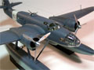

|
Here is one of the last bi-plane fighters to be produced and probably the best such design
from Italian engineer Celestino Rosatelli. This design saw action
during the early days of the Second World War but was soon regulated to
night missions as faster aircraft began rolling off production lines.
Mark Therrell is here with us today to review the Classic Airframes
Regia Aeronautica version of this spunky little bi-plane. Let’s take a
look at the 1/48 scale multi-media Fiat CR.32.
1/28/07
Designed by Celestino Rosatelli the Fiat CR.42 Falco was the last of the
great biplane fighters entering flight testing in late May 1938.
The CR.42 was one of the best biplane fighters ever built and had seen
action on many fronts including North Africa, the Mediterranean, the
Battle of Britain and East Africa. The aircraft was used as a fighter,
an escort aircraft, a night fighter and a trainer. New in 2005 from
Classic Airframes this is the Fiat ICR.42 Idrovolante.
7/29/05
This is a major conversion project. Here I take the out-of-production
Monogram He-111 H4/5 medium bomber and use the Cutting Edge resin
conversion set
to create a model of the Heinkel He-111B Pedro circa 1937 from the
Spanish Civil War. There is a lot of surgery involved here, resin dust
will fly and super-glue will stick to your fingertips. This is not the
conversion for the faint of heart. Here it is, the converted He-111B Pedro
1/19/04
This is a resin conversion kit aimed at the Monogram He-111 H 4/5 kit
and normally I would place this as a subsequent line to that kit review
but this conversion is so extensive and complex that it deserves an
entry all of it’s own. This is the new Cutting Edge Model Works resin
conversion to backdate a He-111 to the earlier Spanish Civil War “B” or
“J”. So, without any further preamble, here is the CE He-111 B/J Pencil Nose conversion. Oh yeah, I take a quick look at the “Pedros in Spain” decals from CE here also. 12/19/03
Click here for a complete construction review of this and the Monogram kit. Project completed 1/19/04
This model is a continuation of my fascination with Romanian aircraft.
This is the Classic Airframes 1/48 scale He-112B built straight from the
box.
For a complete construction review of this model click here...Heinkel He-112B
8/29/03
LTD Models issued a few esoteric kits over the years and one of their best was of the Romanian IAR-80.  As this is probably the most significant Romanian aircraft of the
Second World War it is surprising that this is the only injection molded
kit available in 1/48. I built one kit in 2002 but had to dust off this
feature and build a second kit, this time I will be adding some extra
stuff. Check out this updated construction review of LTD’s IAR-80 dive- bomber and bomber interceptor.
11/20/02 Completed 9/4/05
As this is probably the most significant Romanian aircraft of the
Second World War it is surprising that this is the only injection molded
kit available in 1/48. I built one kit in 2002 but had to dust off this
feature and build a second kit, this time I will be adding some extra
stuff. Check out this updated construction review of LTD’s IAR-80 dive- bomber and bomber interceptor.
11/20/02 Completed 9/4/05
In an attempt to provide the Regia Aeronautica with a heavy fighter suitable to replace the old and slow Fiat fighters of the
day Giovanni Galasso designed the twin engine Ro.57. The Ro.57 was a
single seat monoplane consisted of an all metal, semi-monocoque fuselage
with a steel skeleton and Duralumin structure. By time all
modifications had been incorporate and production begun in earnest it
was 1943 and the type was already becoming obsolete. Here I take a look
at the Wings Models vacuform and resin kit of the Italian heavy fighter,
the IMAM Ro.57.
5/17/08
The Junkers Ju-87 was a very recognizable terror weapon during the Second World War and still today is one of the most
recognizable Luftwaffe aircraft. Initially the type saw tremendous
success but that was only obtained when the Luftwaffe maintained air
superiority. Before long the aircraft mission parameters changed and it
became a ground support type. Here we look at Hasegawa’s D version as
shipped to the Italian air crews. This type was also used by many other
co-belligerent air forces. For your entertainment this is the Hasegawa Ju-87 D ‘Regia Aeronautica’.
10/8/05 Construction completed 12/4/05
I don’t think there is a single modeler amongst us who does not have at least one story of an early Revell-Monogram
kit that was instrumental in starting them down the polystyrene path.
21st Century Toys has taken that place with the next generation of
modelers. Here we present the second kit in their new series of 1/32
scale un-built model kits. Twenty years from now I’m sure modelers will
be telling tales of how these kits got them started modeling. Lets take a
look at the Macchi C.202 Folgore.
2/24/07 Construction completed 4/15/07
The brainchild of Ing. Castoldi, the MC.205 "Veltro" was indisputably the best Italian fighter used
during World War II. It was said that in the hands of a good pilot, it
could defeat any allied plane. The MC.205V was faster than the Re.2005
and the G.55 at medium and low altitude and was capable of meeting the
P-51 Mustang on equal terms. However, at an altitude of over 8,000
meters its performance dropped considerably. Here we take a look at the
1/48 scale kit from Hasegawa and a set of Super Scale replacement
decals. For your review, here is the Macchi MC.205 Veltro
6/26/04
"Single-seat fast fighter seaplane" That was the title of the original drawing laid down in 1916 by  Carlo Felice Buzio and Luigi Calzavara. The Macchi M.5 became the first
seaplane that was capable of besting its land-based counter parts and
became the most produced seaplane fighter of its time. The basic
airframe was produced in two versions, a photo recon version and a
fighter version. Here is the 1/48 Fly models ‘Special Scheme’ version of
the Macchi M.5. 8/29/09 Construction completed 8/29/09
Carlo Felice Buzio and Luigi Calzavara. The Macchi M.5 became the first
seaplane that was capable of besting its land-based counter parts and
became the most produced seaplane fighter of its time. The basic
airframe was produced in two versions, a photo recon version and a
fighter version. Here is the 1/48 Fly models ‘Special Scheme’ version of
the Macchi M.5. 8/29/09 Construction completed 8/29/09
The Potez 631 was a fairly successful aircraft filling a similar role to the RAF Bristol Blenheim
unfortunately it’s exterior profile bore a close resemblance to the
Messerschmitt 110 which drew a large amount of friendly fire onto the
aircraft. With prototypes built in ten variations the 631C2, C3 and CN2
were some of the most common types made and served with a variety of air
forces on both sides of the conflict. Available for the first time in
injection molded plastic in this scale here is the Azure Potez 631 Night Fighter.
9/16/06
The prototype of this plane goes back to 1934 at which time the French Air Force organized a
contest for a three-seat reconnaissance and ground attack aircraft. A
low wing monoplane of entirely metal construction the 63 series was
powered by two 700 hp Gnome-Rhone 14 cylinder radial engines and quickly
exceeded in the field of speed and maneuverability. The 63/11 saw
service with Italy and Romania as well as the Luftwaffe and Vichy forces
and was used by the Free French as well. A complex kit of resin, PE,
white metal and Vacuformed parts – here is the 1/48 scale Potez 63/11 from Socrate JMGT. 6/21/04
Zygmunt Pulawski designed an all metal monoplane in 1929 that was to
lead to one of the most advanced fighter aircraft of the early 1930s,  the PZL P.11C. The Rumanians purchased a license to build the P.11 at
the IAR factory. From here the Rumanians developed the P.24 from the
P.11 and produced it for export. Bulgaria, Greece and Turkey all
purchased the P.24 fighter. Mirage has produced a very accurate and easy
to assemble 1/48 kit of this aircraft and you can check it out here … PZL P.11C.
the PZL P.11C. The Rumanians purchased a license to build the P.11 at
the IAR factory. From here the Rumanians developed the P.24 from the
P.11 and produced it for export. Bulgaria, Greece and Turkey all
purchased the P.24 fighter. Mirage has produced a very accurate and easy
to assemble 1/48 kit of this aircraft and you can check it out here … PZL P.11C.
4/28/08 Construction completed 7/9/08
They called it that “Damned Hunchback” but it was one of the most important Italian produced aircraft of WW2.
Developed from a civilian airliner, the first SM.79s entered service in
late 1936, just in time to fly combat over Spain with the Aviacion
Legionaria. While a very good medium bomber they became excellent
torpedo bomber platforms. Two model manufactures introduced this kit at
nearly the same time, Trumpeter and Classic Airframes. Let’s put these
kits head-to-head and see how they stack up, the Savoia-Marchetti SM.79 Sparviero Torpedo Bomber. 1/8/06 Construction Completed 8/19/06
And now for something completely different. If you like esoteric subjects as much as I do you will be sure to enjoy this one. Direct from Italy via Pacific Coast Models this is the Massi Models 1/48 scale all resin Fiat RS.14 “fast maritime reconnaissance seaplane”.
For an in box review of this model click here...Fiat RS.14
Here is a quick review of La Bancarella Aeronautica's Ali D’Italia
Here is the construction review.... RS.14 Construction
11/9/03
|
|